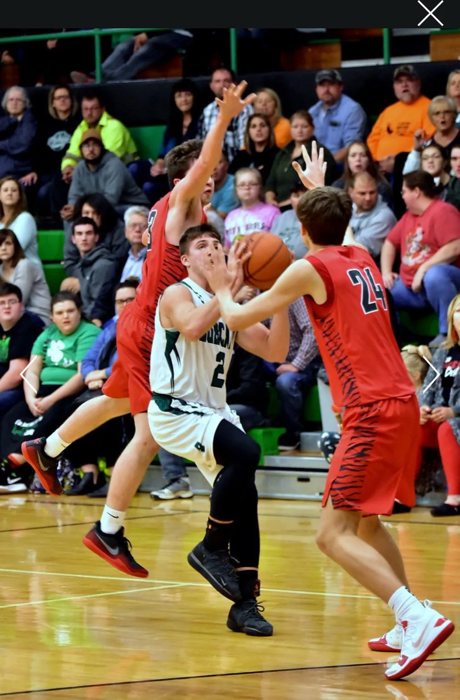
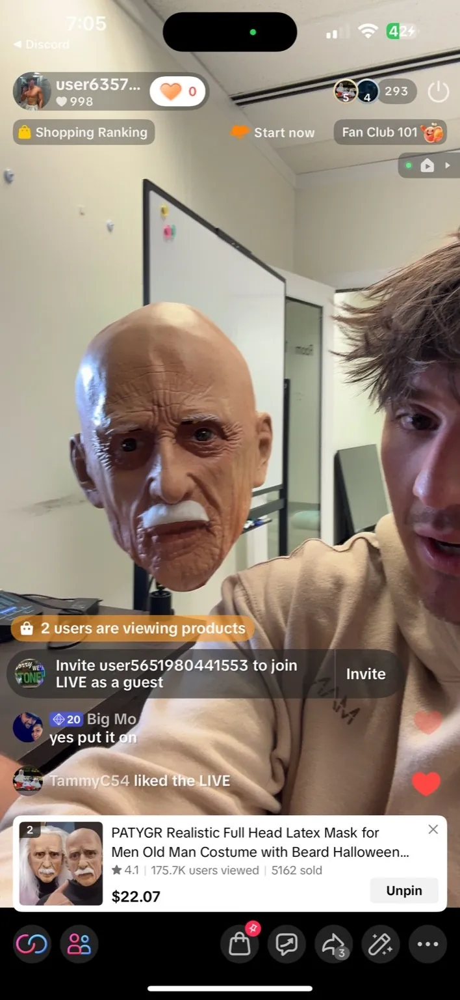

The Journey
Timeline of Gage Sampson
The same Gage Sampson from Franklin Furnace, Ohio who played All-Ohio basketball for the Green Bobcats is the Gage Sampson who co-founded TikTok Titans. Here is the path.
Growing up in Franklin Furnace
Born September 21, 2001 in Franklin Furnace, Ohio, a rural community in Scioto County of about 1,500 people. One of seven siblings; his father was a barber. Attended Green Local School District.
All-Ohio basketball
A standout for the Green Bobcats, Gage earned OHSAA All-Ohio honors in boys basketball in 2019 and 2020 and reached the 1,000-point career milestone — independently documented by OHSAA, MaxPreps, and Sports Illustrated.

Barber school, viral content & sales
Gage followed his father into barbering, then had an early viral moment on TikTok that showed him the power of short-form content at scale — and a stint in direct sales that sharpened his instincts for selling anything.
Co-founding TikTok Titans
Gage co-founded TikTok Titans with John McCoy — an official TikTok Shop Partner agency connecting brands with creators, managing campaigns, and coaching creators through the Titans Inner Circle.

Building the future of TikTok Shop marketing
Gage works in the creator economy and AI-driven marketing, helping creators and brands scale through structured content systems — the same competitive drive that made him a 1,000-point scorer now fueling his work as a founder.